<!doctype html><html lang="en"><head><meta charset="utf-8"><meta name="viewport" content="width=device-width,initial-scale=1"><title>Skills Bank | AI Incident Lab</title><style>
:root{--bg:#070b14;--panel:#111a2a;--panel2:#17243a;--line:#2c3b53;--txt:#f0f5ff;--dim:#a0b2ce;--cyan:#72e5dc;--amber:#ffc178;--red:#ff858a;--blue:#8badff}*{box-sizing:border-box}body{margin:0;background:radial-gradient(circle at 70% 0,#14263f 0,transparent 45%),var(--bg);color:var(--txt);font:15px/1.55 Inter,Segoe UI,Arial,sans-serif}button,input,textarea{font:inherit}button{color:var(--txt);cursor:pointer;background:#24374f;border:1px solid #42617c;border-radius:12px;padding:11px 15px;transition:.15s}button:hover{background:#304966;transform:translateY(-1px)}button.primary{background:#3475e0;border-color:#7aadff;font-weight:750}button:disabled{opacity:.4;cursor:not-allowed;transform:none}input,textarea{color:var(--txt);background:#0b1524;border:1px solid #40506c;border-radius:12px;padding:12px;width:100%}textarea{min-height:110px;resize:vertical}.wrap{max-width:1240px;margin:auto;padding:25px}.top{display:flex;justify-content:space-between;align-items:center;gap:14px;flex-wrap:wrap;margin-bottom:26px}.logo{width:167px;display:block}.head{display:flex;gap:16px;align-items:center}.head small{color:var(--dim);letter-spacing:1.8px;font-weight:800}.panel{border:1px solid var(--line);border-radius:20px;background:var(--panel);padding:23px}.hero{padding:30px;border-radius:24px;border:1px solid #38516e;background:radial-gradient(circle at 90% 5%,#295174 0,transparent 48%),#13243a}h1{font-size:clamp(31px,4.5vw,53px);line-height:1.07;margin:8px 0 15px;letter-spacing:-1px}h2{font-size:24px;margin:0 0 12px}h3{font-size:17px;margin:0 0 10px}p{margin:0 0 13px}.muted{color:var(--dim)}.overline{color:var(--cyan);letter-spacing:2px;font-size:11px;font-weight:800}.grid{display:grid;grid-template-columns:repeat(3,minmax(0,1fr));gap:16px}.two{display:grid;grid-template-columns:minmax(0,1.3fr) minmax(0,.8fr);gap:17px}.stack{display:grid;gap:16px}.pill{display:inline-block;font-size:11px;letter-spacing:1px;border:1px solid #49718e;padding:5px 10px;border-radius:99px;color:#c8e8ff}.case{cursor:pointer;transition:.2s}.case:hover{transform:translateY(-3px);border-color:var(--cyan)}.case .num{color:var(--amber);font-size:30px;font-weight:900}.case h3{font-size:22px}.flag{color:var(--amber);font-weight:800}.stepper{display:flex;flex-wrap:wrap;gap:9px;margin:17px 0}.step{border:1px solid #344960;border-radius:99px;padding:6px 12px;color:var(--dim);font-size:12px}.step.active{color:#091826;background:var(--cyan);border-color:var(--cyan);font-weight:800}.evidence{padding:16px;border:1px solid #364a65;border-radius:14px;background:#0b1728;cursor:pointer;text-align:start;width:100%}.evidence.open{border-color:var(--cyan)}.evidence strong{display:block;margin-bottom:7px}.choice{width:100%;text-align:start;display:flex;gap:12px;align-items:flex-start;background:#132036;margin:8px 0}.choice.sel{border-color:var(--cyan);background:#16363e}.choice .box{width:19px;height:19px;border:1px solid #8ba3c3;flex-shrink:0;border-radius:5px;text-align:center}.actions{display:flex;justify-content:space-between;gap:10px;flex-wrap:wrap;margin-top:18px}.feedback{border-left:4px solid var(--cyan);background:#0d2630;padding:18px;border-radius:8px}.feedback.warn{border-color:var(--red);background:#30202a}.score{font-size:54px;font-weight:900;color:var(--cyan)}.mini{font-size:12px;color:var(--dim)}.hidden{display:none!important}.tag{font-size:12px;color:var(--amber);font-weight:800}.term{border-top:1px solid var(--line);padding:11px 0}.progress{height:8px;border-radius:99px;background:#263852;overflow:hidden;margin:12px 0 20px}.progress i{height:100%;display:block;background:linear-gradient(90deg,#54a3ff,#72e5dc)}.result{background:#091827;padding:15px;border:1px solid var(--line);border-radius:12px}.numcard{font-size:26px;font-weight:900;color:var(--cyan)}a{color:#a9cbff}.right{margin-left:auto}.sources{font-size:12px;line-height:1.8}.center{text-align:center}.danger{color:var(--red)}.good{color:var(--cyan)}details{border:1px solid var(--line);padding:12px;border-radius:10px}summary{cursor:pointer}pre{white-space:pre-wrap;overflow-wrap:anywhere}.rtl{text-align:right;direction:rtl}.rtl .right{margin-left:0;margin-right:auto}@media(max-width:900px){.grid,.two{grid-template-columns:1fr}.wrap{padding:14px}}@media(max-width:550px){.hero{padding:20px}.top{gap:8px}.logo{width:130px}}
</style></head><body><div class="wrap" id="app"></div><script>
'use strict';
const CASES=[
{id:'legal',sector:['LEGAL SERVICES','الخدمات القانونية'],title:['The Cases That Never Existed','قضايا لم تكن موجودة'],year:2023,source:'https://law.justia.com/cases/federal/district-courts/new-york/nysdce/1%3A2022cv01461/575368/54/',summary:['In Mata v. Avianca, lawyers submitted fabricated court decisions generated by ChatGPT. The court sanctioned the lawyers and their firm $5,000.','في قضية Mata v. Avianca، قدم محامون أحكامًا قضائية غير موجودة أنتجها ChatGPT. فرضت المحكمة عقوبة مالية قيمتها 5,000 دولار على المحامين والمكتب.'],role:['You are the legal quality reviewer before a filing reaches a judge.','أنت مسؤول مراجعة الجودة القانونية قبل تقديم المذكرة إلى القاضي.'],evidence:[[['Exhibit A · The draft','A brief cites court decisions with precise-sounding names and quotations.'],['المستند أ · المسودة','مذكرة قانونية تحتوي على أسماء أحكام واقتباسات تبدو موثوقة.']],[['Exhibit B · Verification failure','The cited judgments cannot be located in authoritative legal databases.'],['المستند ب · فشل التحقق','لا يمكن العثور على الأحكام المشار إليها في قواعد البيانات القانونية الموثوقة.']],[['Exhibit C · The real consequence','The June 22, 2023 sanctions order imposed a $5,000 penalty and required corrective letters.'],['المستند ج · النتيجة الحقيقية','أمر العقوبات في 22 يونيو 2023 فرض 5,000 دولار، بالإضافة إلى خطابات تصحيحية.']]],risks:[['Unverified citations presented as legal authority','Undocumented font choices in the brief','Failure to correct after citations were challenged','No independent lawyer review'],['تقديم مراجع قضائية بلا تحقق','نوع الخط المستخدم في المذكرة','عدم تصحيح المراجع بعد الاعتراض عليها','عدم وجود مراجعة مستقلة من محامٍ']],correct:[0,2,3],controls:[['Verify every citation and quote in an authoritative source','Require accountable qualified legal sign-off','Allow AI to invent missing precedents if labelled draft','Block submission if any source cannot be verified'],['مراجعة كل مرجع واقتباس من مصدر قضائي رسمي','اعتماد نهائي من متخصص قانوني مسؤول','السماح بابتكار سوابق مفقودة ما دامت المسودة أولية','منع التقديم إذا تعذر التحقق من أي مرجع']],safe:[0,1,3],verdict:'restricted',why:['AI can assist with outlining or drafting, but must not act as the authority for citations. Stop filing immediately; resume only in a controlled, independently verified workflow.','يمكن للذكاء الاصطناعي المساعدة في الصياغة، لكنه لا يصلح كمصدر للسوابق القضائية. يجب إيقاف التقديم فورًا وعدم استئناف استخدامه إلا بعد تحقق بشري مستقل.']},
{id:'air',sector:['CUSTOMER EXPERIENCE','تجربة العملاء'],title:['The Chatbot Promise','وعد الشات بوت'],year:2024,source:'https://www.burhandogusayparlar.com/ai-decisions/moffatt-v-air-canada/',summary:['An Air Canada chatbot incorrectly told a customer a bereavement fare could be requested retroactively. A tribunal ordered compensation after the customer relied on that advice.','أخبر شات بوت تابع لـAir Canada أحد العملاء خطأً بإمكانية طلب تخفيض تذكرة الوفاة بأثر رجعي. وبعد اعتماد العميل على المعلومة، صدر حكم بتعويضه.'],role:['You manage customer-support automation and must decide whether to keep policy answers live.','أنت مسؤول أتمتة خدمة العملاء، وعليك تقرير استمرار إجابات البوت المتعلقة بالسياسات.'],evidence:[[['Exhibit A · Chat answer','The chatbot said a reduced fare could be requested retroactively within 90 days.'],['المستند أ · رد البوت','ذكر البوت إمكانية طلب التخفيض بأثر رجعي خلال 90 يومًا.']],[['Exhibit B · Official policy','The airline policy did not allow the relevant retroactive request after travel.'],['المستند ب · السياسة الرسمية','لم تكن سياسة الشركة تسمح بهذا الطلب بأثر رجعي بعد السفر.']],[['Exhibit C · Tribunal decision','The tribunal rejected the idea that the airline was not responsible for its chatbot’s inaccurate information.'],['المستند ج · قرار المحكمة','رفضت المحكمة فكرة عدم مسؤولية الشركة عن المعلومة غير الدقيقة التي قدمها البوت.']]],risks:[['Customer-facing answers conflict with official policy','Marketing team picked the wrong icon','No reliable escalation for uncertain policy cases','A promise is communicated before policy confirmation'],['تعارض ردود البوت مع السياسة الرسمية','اختيار أيقونة غير مناسبة','غياب التصعيد عند عدم التأكد من السياسة','تقديم وعد للعميل قبل التحقق من السياسة']],correct:[0,2,3],controls:[['Use approved, version-controlled policy content','Route exceptions or uncertainty to a human agent','Let chatbot improvise when no article matches','Continuously test policy questions and suspend bad answers'],['ربط البوت بسياسات معتمدة ومحدّثة','تصعيد الاستثناءات وعدم اليقين لموظف بشري','السماح للبوت بالارتجال عند غياب المعلومة','اختبارات مستمرة وإيقاف الإجابات غير الدقيقة']],safe:[0,1,3],verdict:'restricted',why:['Pause the incorrect policy-answering function until verified content, monitoring and human escalation are in place. Narrow, audited use may continue; unsupported promises must not.','أوقف وظيفة الإجابة على السياسات غير الموثوقة حتى تتوفر معلومات محدثة ومراقبة وتصعيد بشري. يمكن الاستمرار فقط في استخدام محدود خاضع للرقابة.']},
{id:'health',sector:['HEALTH SUPPORT','الدعم الصحي'],title:['When Advice Becomes Harm','لما النصيحة تتحول لضرر'],year:2023,source:'https://www.wired.com/story/tessa-chatbot-suspended/',summary:['NEDA suspended its Tessa chatbot after reports that it offered potentially harmful weight-loss advice to people seeking eating-disorder support. Tessa was not a ChatGPT-style generative chatbot.','أوقفت NEDA بوت Tessa بعد تقارير عن نصائح لخسارة الوزن قد تضر أشخاصًا يطلبون دعمًا لاضطرابات الأكل. لم يكن Tessa نموذجًا توليديًا على طريقة ChatGPT.'],role:['You lead a sensitive health-support channel, and harmful guidance has just been detected.','أنت مسؤول قناة دعم صحي حساسة، وقد اكتشفت للتو نصائح قد تسبب ضررًا.'],evidence:[[['Exhibit A · Vulnerable users','People seeking eating-disorder support are particularly vulnerable to inappropriate diet advice.'],['المستند أ · مستخدمون معرضون للخطر','الأشخاص الباحثون عن دعم لاضطرابات الأكل قد يتضررون بشدة من نصائح الحمية غير المناسبة.']],[['Exhibit B · Reported outputs','Users and advocates reported chatbot answers relating to weight loss and calorie restriction.'],['المستند ب · المخرجات المبلغ عنها','أبلغ مستخدمون وناشطون عن ردود تتعلق بخسارة الوزن وتقليل السعرات.']],[['Exhibit C · Actual response','NEDA suspended Tessa in 2023 amid concerns about inappropriate answers.'],['المستند ج · التصرف الحقيقي','أوقفت NEDA استخدام Tessa في 2023 بعد المخاوف بشأن الإجابات غير الملائمة.']]],risks:[['Unsupervised advice to vulnerable users','A slow animation on the home screen','Potentially harmful recommendations within a health context','No safe human escalation before harmful answers reach users'],['نصيحة آلية دون إشراف لمستخدمين معرضين للخطر','بطء الأنيميشن في الصفحة الرئيسية','توصيات محتملة الضرر في سياق صحي','غياب تصعيد بشري آمن قبل وصول الردود الضارة']],correct:[0,2,3],controls:[['Immediately suspend the harmful advice function','Refer users to qualified human-led support','Keep automated personalized dietary advice active during testing','Require clinical review and rigorous safety evidence before any reintroduction'],['إيقاف وظيفة تقديم النصائح الضارة فورًا','إحالة المستخدمين إلى دعم بشري مؤهل','استمرار النصائح الغذائية الشخصية آليًا أثناء التجربة','مراجعة سريرية وأدلة أمان صارمة قبل أي إعادة تشغيل']],safe:[0,1,3],verdict:'stop',why:['Stop automated health advice in this sensitive use case now. Testing and expert governance may support future limited tools, but a rewritten prompt alone is not a safe restart decision.','أوقف النصائح الصحية الآلية في هذا الاستخدام الحساس فورًا. قد تسمح الاختبارات والحوكمة الطبية بأدوات محدودة مستقبلًا، لكن تحسين البرومبت وحده لا يبرر إعادة التشغيل.']}];
const K={en:{lab:'AI INCIDENT LAB',title:'THE POINT OF NO RETURN',lead:'Three real AI failures. You are the person who can prevent the next one.',entry:'Enter the investigation',name:'Participant / team name',go:'Start investigation',case:'Choose an incident',investigate:'Open case',evidence:'Evidence review',risks:'Find the root causes',controls:'Design safety controls',decision:'Your decision',debrief:'Incident verdict',back:'Back',next:'Continue',reveal:'Open evidence',opened:'Evidence reviewed',riskHelp:'Select ALL genuine failures. Wrong selections reduce your score.',controlsHelp:'Select the safeguards that actually reduce risk.',stop:'STOP this AI task',restricted:'CONTINUE only with strict safeguards',continue:'CONTINUE unchanged',reason:'Explain your decision and the first two actions you would take.',submit:'Submit incident report',finish:'Return to case files',dashboard:'Trainer dashboard',pin:'Trainer code',open:'Open',export:'Export CSV',clear:'Reset local records',signout:'Change participant',source:'Real case source',fact:'Real-world case summary',scenario:'YOUR ROLE',quality:'Investigation score',correct:'Good decision',unsafe:'Unsafe decision',note:'The scenario is based on a documented incident; evidence cards and decision choices are educational reconstructions, not verbatim case records.',local:'Local browser dashboard only; different devices need a secure backend to sync.',lang:'العربية',status:'Status',cases:'Cases completed',players:'Investigation reports',retry:'Try another case',reflection:'Your written response',hint:'Your strongest next step is to verify facts and match controls to the risk; do not rely on a better prompt alone.',read:'Read case file',root:'Root causes',fix:'Safety intervention',ver:'Go / No-go'},ar:{lab:'مختبر حوادث الذكاء الاصطناعي',title:'نقطة اللاعودة',lead:'٣ حوادث حقيقية بسبب استخدام AI. دورك تمنع الكارثة الجاية.',entry:'ادخل التحقيق',name:'اسم المشارك أو الفريق',go:'ابدأ التحقيق',case:'اختار الواقعة',investigate:'افتح القضية',evidence:'مراجعة الأدلة',risks:'اكتشف الأسباب الحقيقية',controls:'صمّم ضوابط الحماية',decision:'اتخذ القرار',debrief:'الحكم النهائي',back:'رجوع',next:'كمل',reveal:'افتح الدليل',opened:'تمت مراجعة الدليل',riskHelp:'اختار كل الأسباب الفعلية. الاختيارات الغلط بتقلل الدرجة.',controlsHelp:'اختار الإجراءات اللي فعلاً بتقلل الخطر.',stop:'أوقف استخدام AI في المهمة',restricted:'استمر فقط بضوابط صارمة',continue:'استمر بدون تغيير',reason:'اشرح قرارك وأول إجراءين هتعملهم.',submit:'سلّم تقرير التحقيق',finish:'ارجع لملفات القضايا',dashboard:'لوحة المدرب',pin:'كود المدرب',open:'فتح',export:'تصدير CSV',clear:'امسح النتائج المحلية',signout:'تغيير الاسم',source:'المصدر الحقيقي',fact:'ملخص الواقعة الحقيقية',scenario:'دورك في التحقيق',quality:'درجة التحقيق',correct:'قرار سليم',unsafe:'قرار غير آمن',note:'الحوادث حقيقية، لكن بطاقات الأدلة والاختيارات صيغت لأغراض تدريبية وليست اقتباسات حرفية.',local:'لوحة المتابعة على نفس المتصفح فقط. متابعة أجهزة مختلفة تحتاج Backend آمن.',lang:'English',status:'الحالة',cases:'قضايا مكتملة',players:'تقارير التحقيق',retry:'اختار قضية أخرى',reflection:'تفسيرك المكتوب',hint:'راجع الحقائق واضبط الإجراءات حسب نوع الخطر؛ تحسين البرومبت وحده مش كفاية.',read:'اقرأ ملف القضية',root:'جذور المشكلة',fix:'التدخل الوقائي',ver:'قرار الاستمرار أو الإيقاف'}};
let lang=localStorage.getItem('sb_incident_lang')||'en',name=localStorage.getItem('sb_incident_name')||'',trainer=false,stage=0,ci=-1,opened=new Set(),rsel=new Set(),csel=new Set(),verdict='',report='',last=null;const S=()=>K[lang],d=a=>a[lang==='en'?0:1],app=()=>document.getElementById('app'),h=s=>String(s??'').replace(/[&<>"']/g,c=>({'&':'&amp;','<':'&lt;','>':'&gt;','"':'&quot;',"'":'&#39;'}[c])),db=()=>JSON.parse(localStorage.getItem('sb_incident_results')||'[]'),saveDB=a=>localStorage.setItem('sb_incident_results',JSON.stringify(a));
function shell(content){app().className=lang==='ar'?'rtl':'';app().innerHTML=`<div class="top"><div class="head"><div><small>${S().lab}</small><div class="mini">REAL CASES · REAL CONSEQUENCES</div></div></div><div style="display:flex;gap:8px"><button onclick="toggleLang()">${S().lang}</button>${name?`<button onclick="logout()">${S().signout}</button>`:''}</div></div>${content}<footer class="mini" style="margin:24px 0">SKILLS BANK · EXPERIENCE BEFORE EXPOSURE · © 2026</footer>`}
function toggleLang(){lang=lang==='en'?'ar':'en';localStorage.setItem('sb_incident_lang',lang);render()}function logout(){name='';trainer=false;localStorage.removeItem('sb_incident_name');render()}
function render(){if(trainer)return showTrainer();if(!name){shell(`<div class="two"><div class="hero"><div class="overline">INTERACTIVE INVESTIGATION EXPERIENCE</div><h1>${S().title}</h1><p class="muted">${S().lead}</p><div class="pill">3 CASE FILES</div> <div class="pill">EVIDENCE + DECISION</div> <div class="pill">RISK SCORE</div></div><div class="panel stack"><h2>${S().entry}</h2><label>${S().name}</label><input id="learner" maxlength="70" placeholder="Team Alpha / Sara Ahmed" onkeydown="if(event.key==='Enter')join()"><button class="primary" onclick="join()">${S().go} →</button><details><summary>${S().dashboard}</summary><input id="pin" type="password" placeholder="${S().pin}"><button onclick="openTrainer()">${S().open}</button></details></div></div>`);return}if(ci<0){let done=db().filter(x=>x.name===name);shell(`<div class="hero"><div class="overline">MISSION CONTROL</div><h1>${S().case}</h1><p class="muted">${name} · ${done.length} ${S().cases}</p><div class="progress"><i style="width:${Math.min(100,done.length/3*100)}%"></i></div></div><div class="grid" style="margin-top:20px">${CASES.map((c,i)=>`<div class="panel case" onclick="choose(${i})"><div class="num">0${i+1}</div><div class="tag">${d(c.sector)} · ${c.year}</div><h3>${d(c.title)}</h3><p class="muted">${d(c.summary)}</p><button class="primary">${S().investigate} ↗</button></div>`).join('')}</div><p class="mini" style="margin-top:20px">${S().note}</p>`);return}showCase()}
function join(){let v=document.getElementById('learner').value.trim();if(!v)return alert(S().name);name=v;localStorage.setItem('sb_incident_name',name);render()}function openTrainer(){if(document.getElementById('pin').value==='2026'){trainer=true;showTrainer()}else alert('Invalid code')}
function choose(i){ci=i;stage=0;opened=new Set();rsel=new Set();csel=new Set();verdict='';report='';last=null;render()}
function showCase(){let c=CASES[ci],steps=[S().read,S().evidence,S().root,S().fix,S().ver,S().debrief];let body='';if(stage===0)body=`<div class="two"><div class="panel"><div class="overline">${S().fact}</div><h2>${d(c.title)}</h2><p>${d(c.summary)}</p><div class="result"><div class="tag">${S().scenario}</div><p>${d(c.role)}</p></div><p class="sources">${S().source}: <a target="_blank" rel="noopener" href="${c.source}">${c.source}</a></p></div><div class="panel"><h3>YOUR MISSION</h3><p class="muted">${lang==='en'?'Review evidence → identify failure mechanisms → choose safeguards → make a go/no-go decision → defend it.':'راجع الأدلة ← اكتشف الخلل ← اختار الضوابط ← اتخذ قرار الإيقاف أو الاستمرار ← دافع عن قرارك.'}</p><p class="mini">${S().note}</p></div></div>`;
if(stage===1)body=`<h2>${S().evidence}</h2><p class="muted">${lang==='en'?'Open all three exhibits before moving on.':'افتح الأدلة الثلاثة قبل المتابعة.'}</p><div class="grid">${c.evidence.map((e,i)=>`<button class="evidence ${opened.has(i)?'open':''}" onclick="opened.add(${i});render()"><div class="tag">0${i+1}</div><strong>${d(e)[0]}</strong><p class="muted">${opened.has(i)?h(d(e)[1]):h(S().reveal+' →')}</p><span class="mini">${opened.has(i)?'✓ '+S().opened:'🔒'}</span></button>`).join('')}</div>`;
if(stage===2)body=`<div class="two"><div class="panel"><h2>${S().risks}</h2><p class="muted">${S().riskHelp}</p>${d(c.risks).map((x,i)=>opt(x,rsel,i,'risk')).join('')}</div><div class="panel"><h3>INVESTIGATOR NOTE</h3><p class="muted">${lang==='en'?'Not every undesirable detail caused the incident. Find failed verification, oversight, authority or escalation.':'مش كل تفصيلة مش مناسبة معناها إنها سببت الحادث. دور على فشل التحقق والمراجعة والصلاحيات والتصعيد.'}</p></div></div>`;
if(stage===3)body=`<div class="two"><div class="panel"><h2>${S().controls}</h2><p class="muted">${S().controlsHelp}</p>${d(c.controls).map((x,i)=>opt(x,csel,i,'control')).join('')}</div><div class="panel"><h3>SAFETY CHECK</h3><p class="muted">${lang==='en'?'A safeguard must work outside the model’s own claims: verified sources, expert approval, safe escalation and clear stop criteria.':'الضمان الحقيقي لازم يكون مستقل عن كلام الموديل: مصادر موثقة، اعتماد خبير، تصعيد آمن، ومعايير واضحة للإيقاف.'}</p></div></div>`;
if(stage===4)body=`<div class="two"><div class="panel"><h2>${S().decision}</h2>${[['stop',S().stop],['restricted',S().restricted],['continue',S().continue]].map(v=>`<button class="choice ${verdict===v[0]?'sel':''}" onclick="verdict='${v[0]}';render()"><span class="box">${verdict===v[0]?'✓':''}</span><strong>${v[1]}</strong></button>`).join('')}<label style="display:block;margin-top:15px">${S().reason}</label><textarea id="reflection" placeholder="${S().reason}">${h(report)}</textarea></div><div class="panel"><h3>GO / NO-GO</h3><p class="muted">${lang==='en'?'Your recommendation must match the severity. Some tasks can restart after controls; some must be suspended immediately.':'قرارك لازم يتناسب مع خطورة الاستخدام: في مهام ينفع ترجع بضوابط، ومهام لازم تقف فورًا.'}</p></div></div>`;
if(stage===5){let r=last;body=`<div class="two"><div class="panel"><div class="overline">${S().quality}</div><div class="score">${r.score}<span style="font-size:18px">/100</span></div><h2 class="${r.safe?'good':'danger'}">${r.safe?S().correct:S().unsafe}</h2><div class="feedback ${r.safe?'':'warn'}"><strong>${d(c.title)}</strong><p>${d(c.why)}</p></div><div class="term"><strong>${lang==='en'?'Root cause accuracy':'دقة تحديد الأسباب'}: ${r.root}/30</strong></div><div class="term"><strong>${lang==='en'?'Safety controls':'إجراءات الحماية'}: ${r.ctrl}/30</strong></div><div class="term"><strong>${lang==='en'?'Final decision':'القرار النهائي'}: ${r.dec}/30</strong></div><div class="term"><strong>${lang==='en'?'Written rationale (heuristic)':'التبرير المكتوب (تقييم مبدئي)'}: ${r.writ}/10</strong></div><p class="mini">${lang==='en'?'Rules-based scoring is a coaching aid, not an expert assessment.':'الدرجة قائمة على قواعد تدريبية وليست حكم خبير.'}</p></div><div class="panel"><h3>${S().reflection}</h3><p>${h(r.report)}</p><hr style="border:0;border-top:1px solid var(--line)"><h3>${lang==='en'?'What would make this safer?':'إزاي نجعل القرار أكثر أمانًا؟'}</h3><p class="muted">${S().hint}</p><p>${lang==='en'?'Expected decision':'القرار الأنسب'}: <strong>${c.verdict==='stop'?S().stop:S().restricted}</strong></p><a href="${c.source}" target="_blank" rel="noopener">${S().source} ↗</a></div></div>`}
shell(`<div class="hero"><div class="overline">CASE FILE 0${ci+1} / ${d(c.sector)} / ${c.year}</div><h1>${d(c.title)}</h1><p class="muted">${name}</p><div class="stepper">${steps.map((s,i)=>`<span class="step ${stage===i?'active':''}">${i+1}. ${s}</span>`).join('')}</div><div style="margin-top:17px">${body}</div><div class="actions"><button onclick="previous()">← ${S().back}</button>${stage===5?`<button class="primary" onclick="ci=-1;render()">${S().finish} →</button>`:`<button class="primary" onclick="next()" ${stage===1&&opened.size<3?'disabled':''}>${stage===4?S().submit:S().next} →</button>`}</div>`)}
function opt(text,set,i,type){return `<button class="choice ${set.has(i)?'sel':''}" onclick="toggle('${type}',${i})"><span class="box">${set.has(i)?'✓':''}</span><span>${h(text)}</span></button>`}function toggle(type,i){let x=type==='risk'?rsel:csel;x.has(i)?x.delete(i):x.add(i);render()}function previous(){if(stage===0){ci=-1}else if(stage===5){stage=4}else{stage--}render()}
function next(){if(stage===4){report=document.getElementById('reflection').value.trim();if(!verdict||report.length<25){alert(lang==='en'?'Select a decision and explain it in at least 25 characters.':'اختار القرار واكتب تفسير لا يقل عن 25 حرف.');return}evaluate();stage=5}else if(stage<5)stage++;render()}
function point(selected,expected){let tp=[...selected].filter(x=>expected.includes(x)).length,fp=[...selected].filter(x=>!expected.includes(x)).length;return Math.max(0,Math.round(30*(tp/expected.length)-10*fp))}
function evaluate(){let c=CASES[ci],root=point(rsel,c.correct),ctrl=point(csel,c.safe),dec=verdict===c.verdict?30:verdict==='continue'?0:12,writ=report.length>=90?10:report.length>=50?7:4,score=root+ctrl+dec+writ,safe=(verdict===c.verdict&&root>=20&&ctrl>=20);last={id:Date.now()+'-'+Math.random().toString(36).slice(2,7),name,case:c.id,title:c.title[0],at:new Date().toISOString(),score,root,ctrl,dec,writ,safe,verdict,report,risks:[...rsel],controls:[...csel]};let a=db();a.push(last);saveDB(a)}
function showTrainer(){let a=db().slice().reverse(),av=a.length?Math.round(a.reduce((s,x)=>s+x.score,0)/a.length):0; shell(`<div class="hero"><div class="overline">FACILITATOR / LOCAL MISSION CONTROL</div><h1>${S().dashboard}</h1><p class="muted">${S().local}</p><div class="grid"><div><div class="numcard">${new Set(a.map(x=>x.name)).size}</div><p>${lang==='en'?'Names / teams':'أسماء / فرق'}</p></div><div><div class="numcard">${a.length}</div><p>${S().players}</p></div><div><div class="numcard">${av}%</div><p>${lang==='en'?'Average score':'متوسط التقييم'}</p></div></div></div><div class="panel" style="margin-top:17px"><div class="actions" style="margin:0 0 12px"><h2>${S().players}</h2><div><button onclick="exportCSV()">${S().export}</button> <button onclick="if(confirm('Clear local results?')){saveDB([]);render()}">${S().clear}</button> <button onclick="trainer=false;render()">Exit</button></div></div>${a.length?a.map(x=>`<details style="margin:9px 0"><summary><strong>${h(x.name)}</strong> · ${h(x.title)} · ${x.score}% · <span class="${x.safe?'good':'danger'}">${x.safe?'GO/NO-GO aligned':'Needs review'}</span> <span class="mini">${new Date(x.at).toLocaleString()}</span></summary><p>${h(x.report)}</p><div class="mini">Root ${x.root}/30 · Controls ${x.ctrl}/30 · Decision ${x.dec}/30 · Verdict ${h(x.verdict)}</div></details>`).join(''):`<p>${lang==='en'?'No local submissions yet.':'لا توجد محاولات محفوظة على هذا المتصفح.'}</p>`}</div>`)}
function exportCSV(){let rows=[['Name','Case','Timestamp','Score','Root','Controls','Decision','RationaleScore','SafetyAligned','Verdict','Reflection'],...db().map(x=>[x.name,x.title,x.at,x.score,x.root,x.ctrl,x.dec,x.writ,x.safe,x.verdict,x.report])],s='\ufeff'+rows.map(row=>row.map(v=>'"'+String(v).replaceAll('"','""')+'"').join(',')).join('\r\n'),b=new Blob([s],{type:'text/csv;charset=utf-8'}),u=URL.createObjectURL(b),a=document.createElement('a');a.href=u;a.download='SkillsBank_AI_Incident_Lab_Results.csv';a.click();URL.revokeObjectURL(u)}
render();
</script></body></html>
